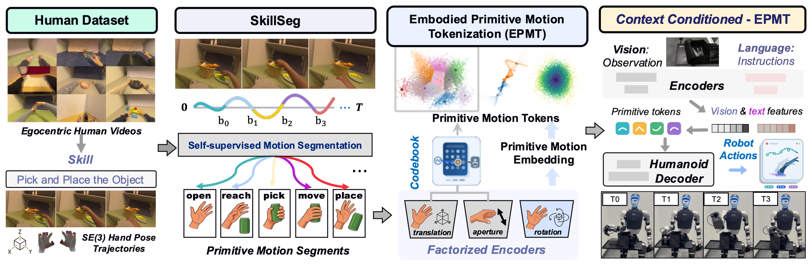

Each task shows the external camera beside the hand camera, time-aligned to start and end together.

Framework overview. Our framework learns reusable motion primitives directly from egocentric human videos. SkillSeg first decomposes continuous SE(3) hand trajectories into semantically meaningful motion segments. EPMT then factorizes each segment into translation, aperture, and rotation components and maps them into discrete primitive motion tokens. These tokens form a shared motion representation that bridges human demonstrations and humanoid execution. Conditioned on visual observations and language instructions, CC-EPMT composes the primitive tokens and decodes them into executable humanoid actions.